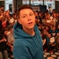

Mon expérience
- 2017 - présent : Responsable Web marketing au sein d'une Business School. Social Media, SEO, Campagnes médias
- 2016 : Associate Communication Manager chez BlaBlacar
- 2015 : Assistant Marketing et Communication chez Reed Exhibition
- 2010 - 2015 : Responsable Communication chez Bionic France
Mes compétences
Soft Skills
- Créatif
- Curieux
- Team Spirit
- Ambitieux
Hard Skills
- Suite Adobe
- Social Media campaign
- SEO
- Analytics
Ma formation
- 2018 : Web Dev Junior Openclassrooms
- 2014 - 2016 : Master Stratégie de Marque et innovation produits
- 2013 : Certificate in International Marketing
- 2011 - 2014 : Bachelor in Marketing and Business Development